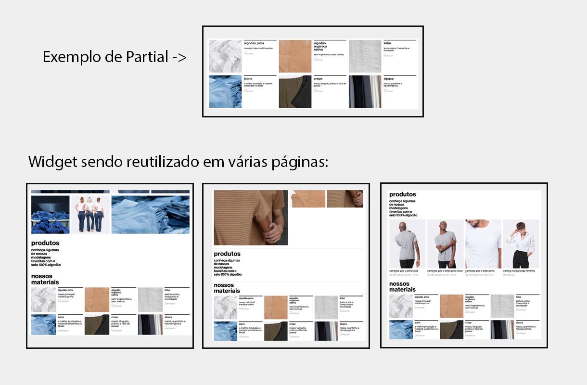
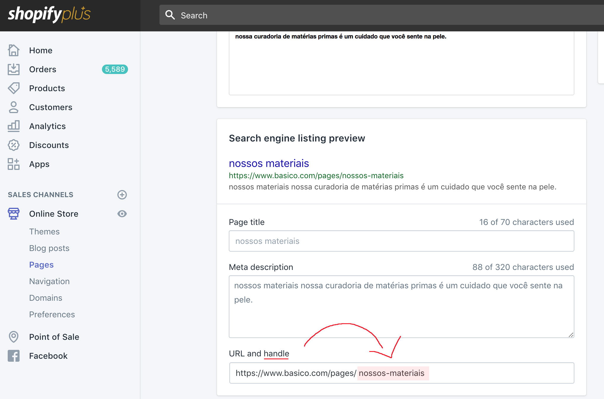
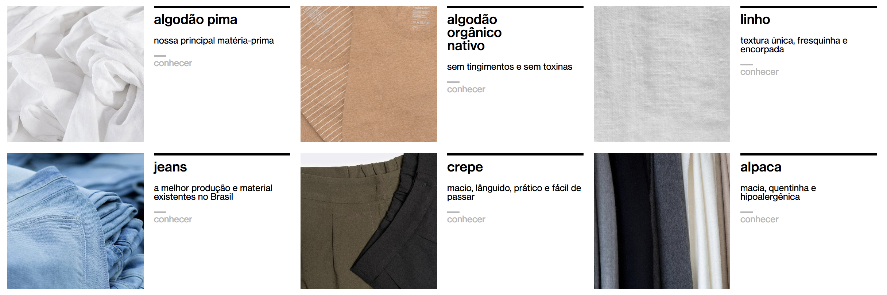

Esse Widget tem como função principal reutilizar componentes pré existentes em outras páginas.
Ele não é visivel no front da página, porem é um widget essencial para a boa construção de landing pages.

<landing-partial handle="todos-os-materiais">
</landing-partial>
| Código | Nome | Descrição | Exemplo |
|---|---|---|---|
| handle | Referencia da Landing Page | O shopify chama isso de Handle, e ele também pode ser encontrado na URL da página. | todos-os-materiais |
Todas as páginas possuem seu próprio handle, e ele sempre é único. Para saber qual é o handle, abra a página em "Online Store -> Pages -> Sua página", e role a tela para baixo, conforme a imagem:
Esse Widget só tem uma aplicação.
<landing-partial handle="todos-os-materiais">
</landing-partial>
Este exemplo renderiza a página "todos os materiais" dentro da sua página:
